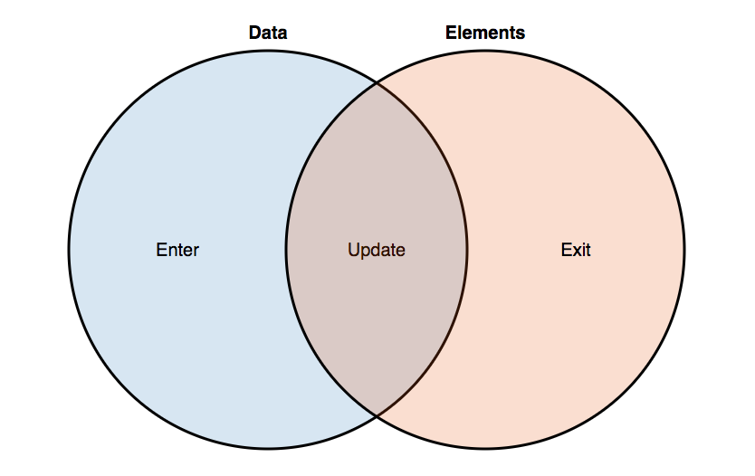
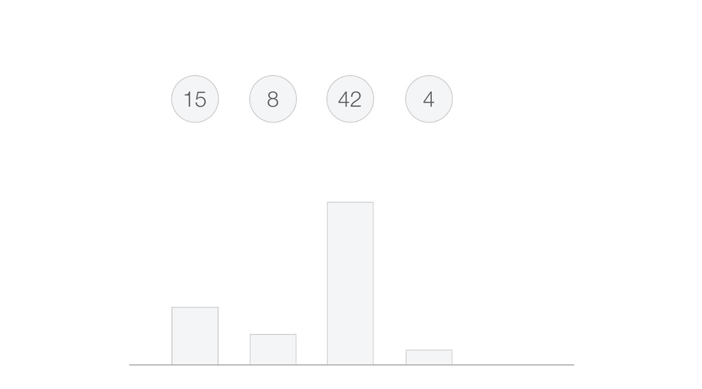
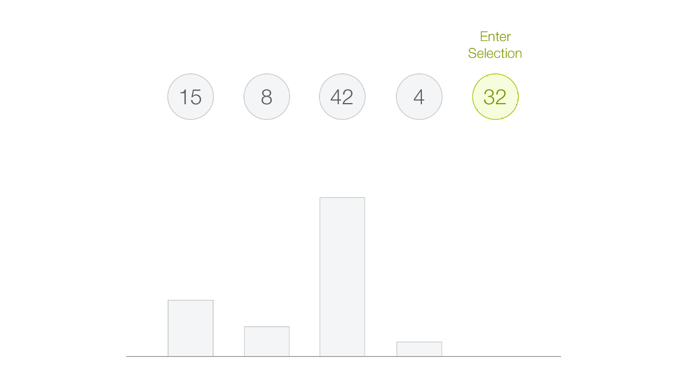
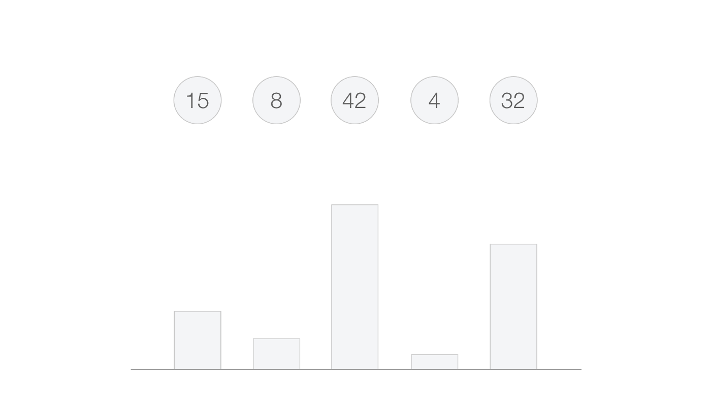
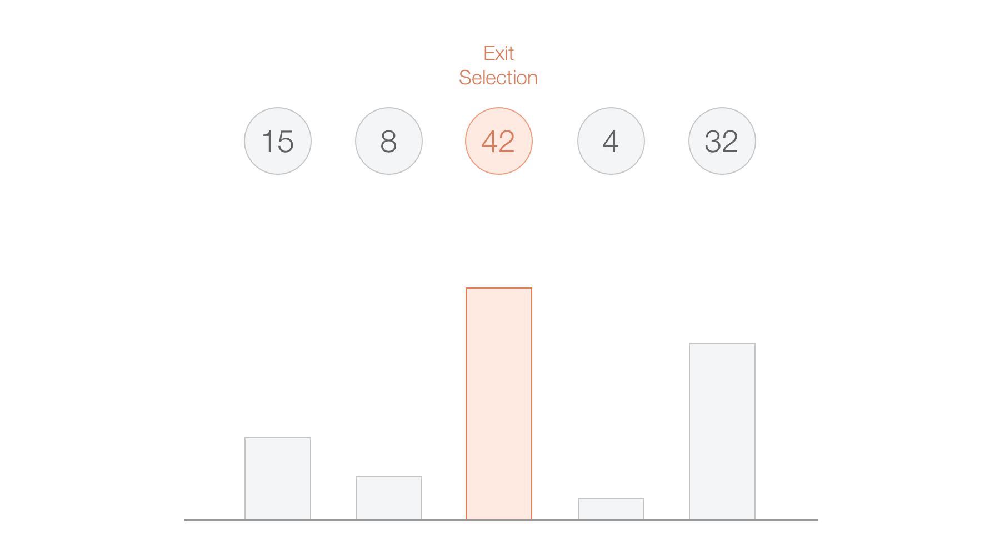
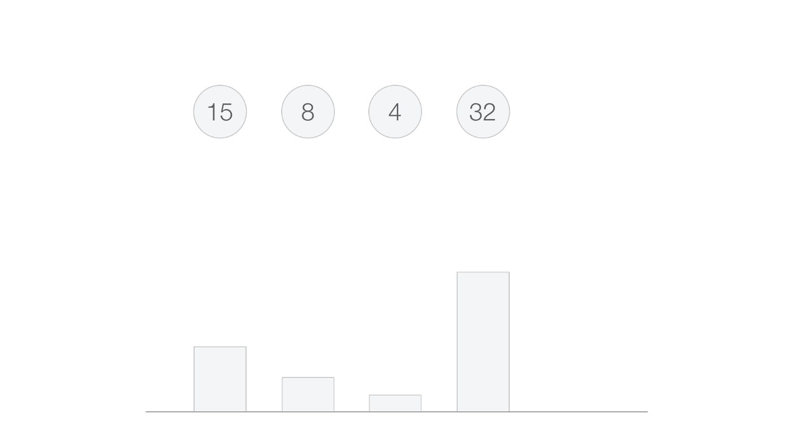

Dans le cadre du cours nous allons développer des visualisations pour le Web. Pour ce faire nous allons créer des pages HTML, qui afficheront des graphiques en SVG, stylés avec du CSS, assemblés et animés avec du JavaScript. Voir ici pour des rappels de base sur HTML
Quelques rappels
SVG
SVG (Scalable Vector Graphics) est un format d'images vectorielles basé sur le langage XML. Il permet de décrire des formes graphiques. Voir cette vidéo d'introduction pour en savoir plus.
CSS
CSS (Cascading Style Sheets), permet de décrire la présentation d'une page Web (à distinguer du contenu). Par exemple de définir la couleur d'une forme SVG, la taille d'un titre, ou sa police de caractère. Voir cette introduction si vous avez besoin de rappels.
JS
JavaScript permet de rajouter des comportements dynamiques à vos pages Web, soit pour réagir à des événements venant de l'utilisateur (ex: un clic), soit en réaction à des données (ex: chargement, changement, etc.) Voir cette introduction si vous avez besoin de rappels.
D3
D3 est un librairie JavaScript qui permet de manipuler le DOM de navigateur et de connecter des données à l'arbre DOM. Elle est principalement utilisée pour manipuler des visualisations en SVG, mais peut l'être aussi du html, ou d'autre format qui suivent celui du DOM.
D3 Show reel
D3 Show Reel from Mike Bostock, code source.
L'exemple ci dessous s'appuie sur d3 pour des manipulations JavaScript simples. En cas de clic sur le div "chart", un message sera affiché dans la console du navigateur. Par ailleurs un élément paragraphe est rajouté à la page de manière programmatique lorsque le code est exécuté (càd après que la page se soit chargée).
Quelques pointeurs
- D3.js site & documentation
- Gallery D3
- Observable HQ la plateforme de notebooks Web (quasi) dédiée à D3js
- Ses exemples plus anciens
La visualisation avec D3
Un barchart en SVG pur:
Un barchart en SVG avec D3:
Le data binding D3
Si D3 offrent de nombreuses fonctionalités pour la visualisation, le coeur de d3 réside dans la capacité à connecter des éléments graphiques à des données. Il allège ainsi le travail de "binding" qui doit souvent être fait "à la main" avec d'autres bibliothèque (ex: p5js).
D3 utilise 3 fonctions: enter(), update(), et exit(). Pour connecter des actions de dessin, à des changements dans les données.
Quand de nouvelles données arrivent (ou lors du 1e chargement), elles sont associées à enter(). Il va alors falloir ajouter des éléments graphiques
  Quand des données sont supprimées elles vont être associées à exit(). Il faudra alors effectuer les traitements correspondants.
 Illustrations de Christian Behrens
Enfin certaines données peuvent être amenées à être modifiées cela sera traité via update().
Quelques références:
Le data binding D3 avec join()
Aujourd'hui, plutôt que d'utiliser enter(), update() et exit(), que vous verrez toutefois dans de nombreux exemples, on peu s'appuyer sur join() qui fait la jointure des trois fonctions, et abstrait leur traitement.
Quelques références: